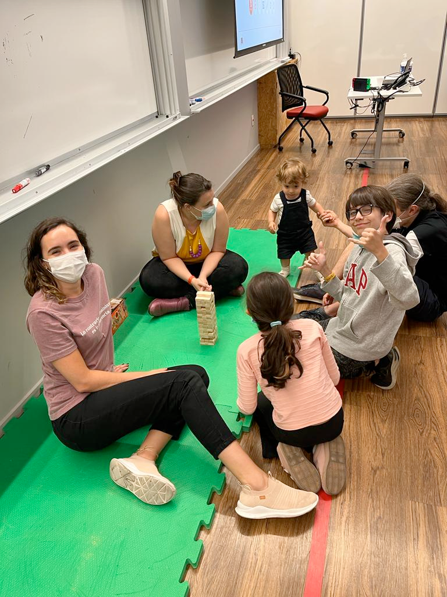

| Região | Número de Capítulos | Total de participantes |
|---|---|---|
| US/Canada | 59 | 30112 |
| Latin America | 58 | 27774 |
| Europe | 57 | 25056 |
| Asia | 19 | 5806 |
| Africa | 12 | 5688 |
| Australia | 10 | 5371 |
| Pacific/Galapagos | 1 | 460 |
Projetos de tradução com a comunidade R
aMostra de Estatística - IME USP
R-Ladies São Paulo + Beatriz Milz + Geovana Lopes Batista
2026-10-01
O que é a R-Ladies?
R-Ladies é uma organização mundial cuja missão é promover a diversidade de gênero na comunidade da linguagem R.
R-Ladies São Paulo integra, orgulhosamente, a organização R-Ladies Global, em São Paulo.
Como?
Através de meetups e mentorias em um ambiente seguro e amigável.
Nosso principal objetivo é promover a linguagem computacional estatística R compartilhando conhecimento, assim, quem tiver interesse na linguagem será bem-vinda, independente do nível de conhecimento.
Para quem?
Nosso principal público-alvo são as pessoas que se identificam com gêneros sub-representados na comunidade R, portanto: mulheres cis, mulheres trans, homens trans, pessoas não-binárias e queer.
Missão
Como uma iniciativa de diversidade, a missão das R-Ladies é alcançar uma representação proporcional de pessoas de gêneros atualmente sub-representados na comunidade R, incentivando, inspirando e capacitando-as.
Código de conduta
A R-Ladies dedica-se a proporcionar uma experiência livre de assédio para todas as pessoas partcicipantes, desta forma, não é tolerada nenhuma forma de assédio. Código de conduta - R-Ladies
R-Ladies - Capítulos no mundo
Atualizado em: 09/2026. Fonte: R Community Explorer
R-Ladies no Brasil
| Capítulo | Participantes |
|---|---|
| R-Ladies São Paulo | 1340 |
| R-Ladies Belo Horizonte | 894 |
| R-Ladies Niterói | 760 |
| R-Ladies Rio de Janeiro | 644 |
| R-Ladies Natal | 456 |
| R-Ladies Floripa | 448 |
| R-Ladies Goiânia | 417 |
| R-Ladies Porto Alegre | 362 |
| R-Ladies Salvador | 246 |
Atualizado em: 09/2026. Fonte: R Community Explorer
R-Ladies no Brasil
| Capítulo | Participantes |
|---|---|
| R-Ladies Vitória | 218 |
| R-Ladies Recife | 153 |
| R-Ladies Fortaleza | 112 |
| R-Ladies Lavras | 66 |
| R-Ladies Curitiba | 63 |
| R-Ladies Brasília | 61 |
| R-Ladies São Mateus | 10 |
Atualizado em: 09/2026. Fonte: R Community Explorer
R-Ladies em São Paulo

Primeiro encontro da R-Ladies São Paulo - 2018
+ 1340 pessoas participantes - 09/2026
GuGuDaDados
Primeira edição em novembro/2022.

Blog: rladies-sp.org
- Textos escritos por pessoas da comunidade
Saiba mais sobre a R-Ladies
Slides feitos com Quarto e Quarto R-Ladies Theme.